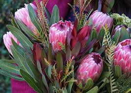
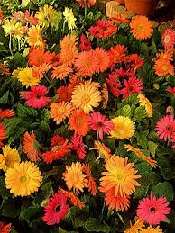

Featured are some of the best flowers found in our country.

Proteas are ancient, hardy flowering shrubs native to South Africa, renowned for their larg, dramatic and varied flower heads, which can reach 12 inches across. They thrive in sunny, acidic, well-drained soil and are popular as drought-tolerant, low maintenance landscape plants in Mediterranean climates.
Learn More
The Barberton Daisy is a hardy, perennial South African wildflower native to Mpumalanga, particulary around Barberton. Known as a popular, vibrant, daisy-like flower, it ranges in color from red, orange, pink and white to yellow, thriving in well-drained, sunny, rocky habitats.
Learn More